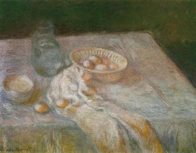

Menachot 54 - As Things Are Now, Or As They Were Then?
The rule is that the ritual impurity of food items depends on their volume, and the volumes are assessed as they are. Any amount of food can become ritually impure, but to transmit the impurity further it must have at least an egg's volume. However, what does "as they are" mean?
For example, what would be the law for the calf's meat that swelled to an egg's volume, or for the meat of an old animal that shrank? Rav, Rabbi Chiya, and Rabbi Yochanan say that "as they are" means "as they are now," but Shmuel, Rabbi Shimon son of Rabbi Yehudah the Prince, and Resh Lakish say that it means "as they were initially."
Actually, if the food volume was initially less than an egg, then by the Torah law it cannot convey impurity. However, it could be that to avoid confusion the Sages declared it impure once it swelled. The argument is about the existence of this additional precautionary decree of the Sages.
Art: Claude Monet - Still Life with Eggs